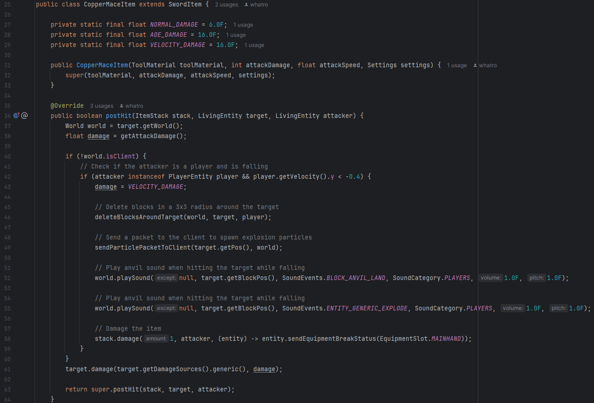

I created a mod for the popular video game called "Minecraft," introducing new gameplay features that extend and integrate with the existing codebase. Minecraft is a sandbox game where players set their own goals in an infinite 3D world made of blocks. Modding video games can be challenging, and Minecraft is no exception. I make mods for Minecraft Java Edition, which is only available on PCs. The mod is written entirely in Java, as it is the primary programming language Minecraft runs on. Not only does a mod developer need to know how to code in Java, but they also need to learn how Minecraft works internally.
Useful Copper: A Minecraft Mod
In Minecraft, players can mine and collect copper ore. Copper ore is common and can be smelted into copper ingots. Copper is used to make building blocks and very few items like lightning rods and spyglasses. However, many players think copper has a lot of missed potential. The most common complaint is that copper is boring, and you can't craft very many cool items with it, like armor or tools. Meanwhile, you can craft all sorts of fun items with iron ore, like armor, tools, anvils, railways, etc. To address this problem, I decided to create a Minecraft mod that makes players want to mine as much copper as possible to try new features I added to the game.
You can check out the source code for my project here:
Useful
Copper
Repository
It is saved on one of my anonymous GitHub accounts.
If you are a Minecraft player and know how to install mods, you can download the .jar file for my
mod from Modrinth, a platform for hosting video game mods. My mod is for Minecraft Fabric version 1.20.1.
Useful Copper Download
Here are the most notable features I have added:
Copper Armor
Many players wish you could turn copper ingots into armor, especially since all other metallic ores can be turned into armor. Since copper can be found in the early game, I decided to make my copper armor very useful for players who haven't progressed much. Both copper and iron armor can be crafted early in the game, and I didn't want one armor to overshadow the other. I decided to make copper armor give less protection than iron armor, but it gives players a permanent speed boost (speed 1) when the full set is worn. Copper armor is unique because no other armor set in the game buffs the player's speed. This allows for both copper and iron armor to be useful, and the player can choose which one they would like to use. Copper armor becomes less useful in the endgame because players can use speed potions to increase their movement speed, and they wear netherite armor, which gives more protection than both copper and iron. From a gameplay perspective, I think my copper armor fits perfectly into Minecraft.

Copper Mace
In recent updates, Minecraft added the mace, a weapon that is very overpowered. A player can one-shot any enemy by hitting them with the mace if the user falls for a little while. I decided to create my own version of the mace because it's fun to use. The copper mace looks similar to the normal mace, but it looks like it's made of copper rather than steel. In my opinion, my copper mace's design makes more sense because maces are found in trial chamber dungeons. Trial chambers are full of copper blocks, and the blue handle represents the breeze rods found in trial chambers. Hitting an enemy with the copper mace normally does 3 hearts of damage, but if you have some downward velocity, it deals 8 hearts of damage. Compared to the hundreds of hearts the normal mace can deal in a single blow, the copper mace is weaker. I added an AoE attack to the copper mace, so when an enemy is hit with downward velocity, other enemies around it also take 8 hearts of damage. The copper mace breaks blocks around the enemy when hit and has an explosion particle effect. To make the copper mace easier to use, whenever a player holds it, they can jump significantly higher. This allows players to easily gain downward velocity, but it doesn't work well in tight spaces like caves. The copper mace is useful outside of fights because players will be able to jump higher, and this is great for peaceful activities such as building. The materials required to craft this item can't all be found in the early game because I think a newer player shouldn't have access to this weapon so soon.
Copper Chainsaw
Many players wish copper tools were added to the game. However, there's already a lot of pickaxes, axes, shovels, and swords in the game, and I wanted to create something more unique and memorable than a standard set of tools. I like chopping down trees and collecting wood in Minecraft, but I've always felt like the best axes in the game weren't fast enough for me. I decided to add the copper chainsaw, which breaks wood blocks instantly. Players have to hold left click while using an axe to break blocks, but once a player powers on their copper chainsaw, they can simply look at the blocks they want to remove, and the chainsaw instantly breaks it for them. This can be quite overpowered, so I decided to make it more difficult to craft than a netherite axe, the best axe in the game. One of the items required to craft it (the wither star) is only dropped from a boss. I made sure the copper chainsaw didn't completely outclass axes by making it weak in PvP. Axes can break shields and deal high amounts of damage, while the copper chainsaw doesn't. To make the item feel more polished, I added an animation to it whenever it is turned on. Pressing right click turns the item on and off.

Other Items

I added copper nuggets to this mod. Copper ingots can be converted to copper nuggets, and vice versa. They are used for crafting recipes, but they don't do anything special. Iron and gold nuggets exist in vanilla Minecraft, so I think it makes sense to add copper nuggets.
I have also begun working on some unfinished features that are not included in my useful copper mod yet, but I wanted to share them.
This is the thunder blade; it prevents an enemy from moving for a decent period of time. However, the thunder blade deals very low damage.
I have always wanted to design my own dimension in Minecraft. I created copper portal blocks that allow you to travel to my custom dimension. Someday, I may add custom dungeons and mobs to my dimension.
The Development Process
Some may assume that modding a video game is easy simply because it's a video game. You could just sit down, open up Minecraft, write some code, and finish making a mod. However, it's not that easy. Before you even start learning how to mod in Minecraft, you have to learn how to code in Java. Thankfully, I began coding with Java when I took AP Computer Science in 11th grade. I started learning how to mod by watching a YouTuber named Kaupenjoe. Here is a link to his YouTube channel: Modding By Kaupenjoe. In my opinion, this is the absolute best way to start your modding journey, especially if you already know how to code in Java but have no idea how to make a mod. I decided to give Minecraft modding a try because I would be able to learn a lot about programming while working with my favorite video game. I proceeded to watch Kaupenjoe's 1.20.1 fabric modding tutorial playlist and practiced creating mods for about a month. It was extremely difficult, but after dozens of hours, I eventually figured out how to create mods without copying and pasting Kaupenjoe's code word for word. I use a mod loader called "Fabric" along with the Fabric API. They allow me to edit Minecraft's source code and add my own code to the game. You can learn more about Fabric here: Official Fabric Wiki.
Below is an example of what adding code to Minecraft would look like. This is a snippet of my copper mace's code:
Below is an example of what editing Minecraft's source code would look like. This is called a "mixin," where you inject code into an existing method. This mixin changes the player's arm positions when they hold my copper chainsaw. Here is a snippet of my code:
My project is not meant for the latest version of Minecraft, and some items don't exist in previous versions of Minecraft, like the normal mace. Someday I may update my mod to the latest version, but lots of code will have to be rewritten.